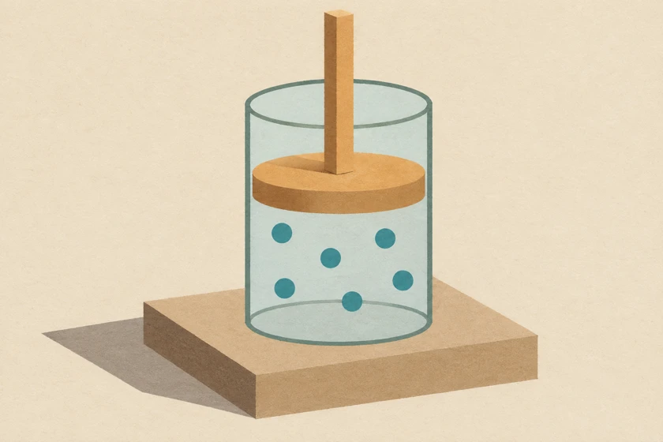
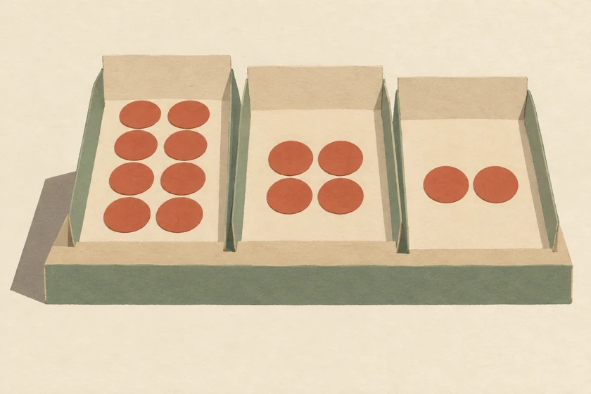
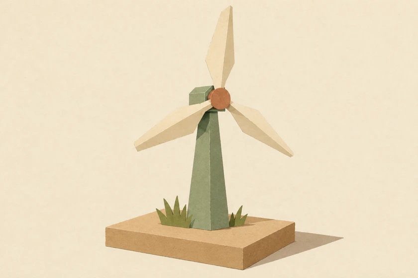

<!doctype html><html lang="zh-HK"><meta charset=utf-8><meta name=viewport content="width=device-width, initial-scale=1"><title>實驗標本櫃 · DSE Physics Lab</title><style>*{box-sizing:border-box}body{margin:0;background:#eee9db;color:#2c3d33;font:16px/1.4 system-ui,sans-serif}main{max-width:1080px;margin:auto;padding:28px clamp(16px,5vw,60px) 60px}header{border-top:4px solid;padding:12px 0 20px}small,footer,b{font:700 12px/1.5 monospace;letter-spacing:.08em}h1{font:700 clamp(34px,6vw,64px)/1.1 Georgia,serif;margin:22px 0 3px}header p{margin:6px 0}section{display:grid;grid-template-columns:repeat(auto-fit,minmax(min(205px,100%),1fr));gap:16px 12px}.box{background:#faf6e9;color:inherit;text-decoration:none;display:flex;flex-direction:column;padding:13px 14px 0;border:1px solid #b9af98;border-bottom:6px solid #a07856;box-shadow:inset 0 5px 9px #aa957522}.box:hover,.box:focus-visible{outline:3px solid #407163}.box svg{width:100%;background:linear-gradient(165deg,#fff8,var(--t));border-bottom:1px solid #c6bda6}.box small{margin-bottom:8px}.box h2{font-size:19px;margin:11px 0 0}.box span{font-size:13px;color:#515c50}.box footer{margin-top:auto;padding:12px 0;color:#315f50}@media(max-width:520px){section{grid-template-columns:repeat(2,minmax(0,1fr))}.box{padding:8px 8px 0}.box h2{font-size:16px}}.box figure{margin:0}.box figure img{display:block;width:100%;height:auto}.box figcaption{font-size:13px;color:#465448;margin:4px 0}main{max-width:1250px}header{display:flex;align-items:center;justify-content:space-between;flex-wrap:wrap;gap:6px 24px}header h1{margin:10px 0}header small{width:100%}section{background:#ab805a;padding:12px;gap:12px 5px;border:7px solid #876344;box-shadow:0 12px 24px #523b2829;grid-template-columns:repeat(4,minmax(0,1fr))}.box{position:relative;padding:0;background:#e4d1b5;border:0;border-bottom:8px solid #896443;box-shadow:0 4px 3px #51341c77;overflow:hidden}.box figure{order:0;background:#f5ead5}.box figure img{width:100%;aspect-ratio:1.5;object-fit:cover}.box figcaption{position:absolute;top:7px;left:8px;margin:0;color:#373a31;background:#fff9e5ef;padding:2px 6px;font-size:11px}.box small{order:1;margin:8px 12px 0;color:#675238}.box h2{order:2;margin:3px 12px;font-size:18px}.box span{order:3;margin:0 12px 5px}.box footer{order:4;padding:4px 12px 10px}.box:focus-visible{outline-offset:-3px}@media(max-width:780px){section{grid-template-columns:repeat(2,minmax(0,1fr))}}@media(max-width:520px){main{padding:12px 8px 28px}header{padding:8px}section{padding:5px;border-width:4px;gap:9px 4px}.box h2{font-size:16px}.box figcaption{position:static;background:#f5ead5;padding:2px 8px}.box small,.box h2,.box span{margin-left:8px}}</style><script defer src="lab-nav.js"></script><main><header><small>CPCYDSS　/　PHYSICS COLLECTION</small><h1>DSE Physics Lab</h1><p>物理實驗櫃　·　館藏 01–08</p></header><section><a class="box" href="heat-and-gases.html" style="--t:#e8ab68"><small>01 / HG</small><figure><figcaption>氣體活塞</figcaption></figure><h2>熱和氣體</h2><span lang="en">Heat and Gases</span><footer>Browse topic · 課題索引 ↗</footer></a><a class="box" href="force-and-motion.html" style="--t:#92b5ad"><small>02 / ME</small><figure><figcaption>小車與光閘</figcaption></figure><h2>力與運動</h2><span lang="en">Force and Motion</span><footer>Browse topic · 課題索引 ↗</footer></a><a class="box" href="wave-motion.html" style="--t:#a6bbce"><small>03 / OP</small><figure><figcaption>三稜鏡色散</figcaption></figure><h2>波動</h2><span lang="en">Wave Motion</span><footer>Browse topic · 課題索引 ↗</footer></a><a class="box" href="electricity-and-magnetism.html" style="--t:#d0a578"><small>04 / EM</small><figure><figcaption>電磁鐵</figcaption></figure><h2>電與磁</h2><span lang="en">Electricity and Magnetism</span><footer>Browse topic · 課題索引 ↗</footer></a><a class="box" href="radioactivity-and-nuclear-energy.html" style="--t:#adadcb"><small>05 / RA</small><figure><figcaption>半衰期模型</figcaption></figure><h2>放射現象與核能</h2><span lang="en">Radioactivity and Nuclear Energy</span><footer>Browse topic · 課題索引 ↗</footer></a><a class="box" href="atomic-world.html" style="--t:#abcbb8"><small>06 / E2</small><figure><figcaption>原子模型</figcaption></figure><h2>微觀世界</h2><span lang="en">Atomic World</span><footer>Browse topic · 課題索引 ↗</footer></a><a class="box" href="energy-and-use-of-energy.html" style="--t:#b9ba83"><small>07 / E3</small><figure><figcaption>風力發電機</figcaption></figure><h2>能量和能源的使用</h2><span lang="en">Energy and Use of Energy</span><footer>Browse topic · 課題索引 ↗</footer></a><a class="box" href="mathematics.html" style="--t:#d8aca2"><small>08 / M2</small><figure><figcaption>曲線下的面積</figcaption></figure><h2>數學補充</h2><span lang="en">Mathematics</span><footer>Browse topic · 課題索引 ↗</footer></a></section><p>Created by Mr Lai Ka Chun (LKU) · CPCYDSS</p></main></html>